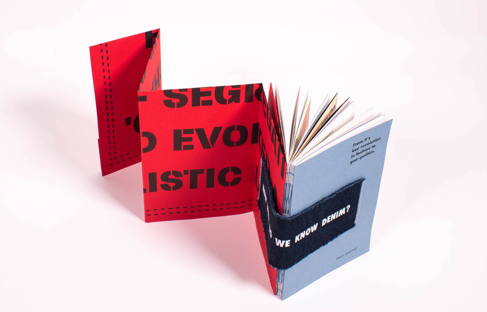
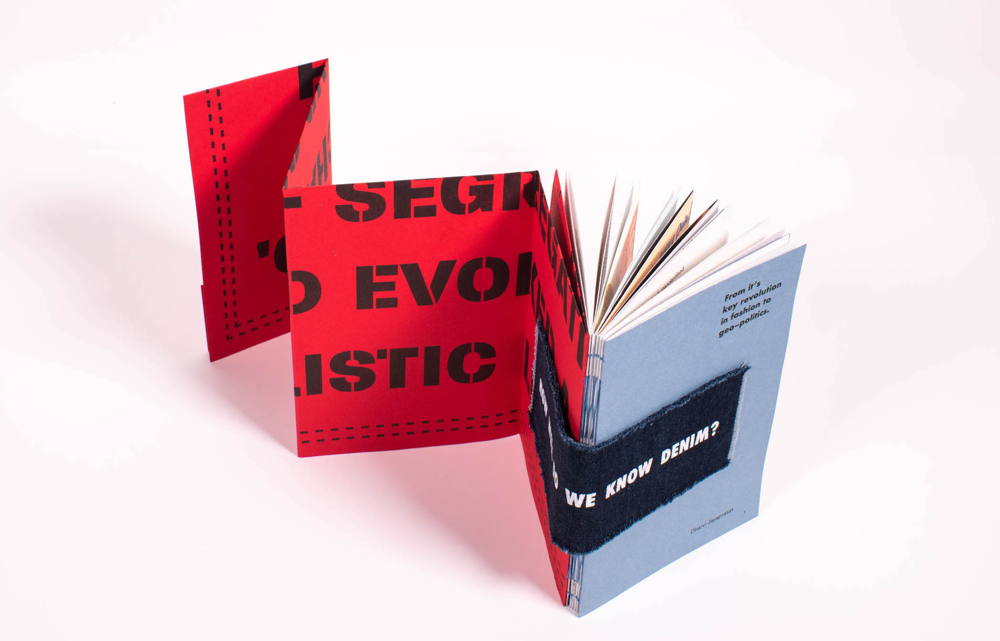

The S Word
The 'S' word explores the barriers to sustainability in creative courses - Graphic Design.
Made from 100% discarded scrap paper, the three volumes collectively present academic and student perspectives on the challenges sustainability poses to the industry and education.
Wunderkammer
A photographic directory of objects, artworks and artefacts that inspired my interest throughout my years studying graphic design.
Condensed in a pocket-size editorial, where the images gradually increase in scale with each turn, mirroring the actual physical size of the objects.

Denim
For this project I focused on denim as a symbol of protest, empowerment and change.
I explored its cultural significance through examining denim advertisements and propaganda, uncovering their role in shaping gender constructs and delved into denim's connection to political and historical movements, highlighting it’s influence on major constitutional changes.
Re-formatting the impactful narratives through an equally compelling publication.
 
